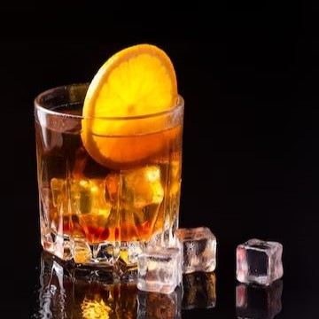

סוגי אלכוהול
וודקה
מופק באמצעות התססה וזיקוק של דגנים או תפוחי אדמה.
מלבד כמויות זניחות של חומרי ריח.
2 סוגי וודקה מומלצים
פינלנדיה
וודקה פינית המיוצרת משעורה ועוברת זיקוק רציף.
גרייגוס
וודקה צרפתית המופקת משעורה המגיעה מאזור קוניאק.
ג'ין
משקה "קשה" לשתייה, בעל טעם יבש מאוד,
נדיר לראות אנשים השותים אותו "נקי" ולכן נעשה בו שימוש בקוקטיילים.
3 סוגי ג'ין מומלצים
בומביי ספייר
מבוסס על מתכון עתיק מ-1761 שהתגלה במזקקה ישנה.
בייצור המרכיבים עוברים תהליך של אידוי, שהופך את טעמם למעודנים וחלקים.
מארה
מאחד את תרבויות הים התיכון השונות תחת מרכיבים בוטניים משותפים.
בעל טעמים ירוקים של זיתים ירוקים, רוזמרים וזרעי כוסברה.
אוקסליי
מיוצרת באנגליה בעל טעם קליל ועדין.
בתהליך ההכנה משרים 14 תבלינים למשך 15 שעות אשר נותנים את הטעם.
טקילה

מיוצרת במקסיקו, מאגבה כחולה.
הטקילה היא הכי ארומטית ומורכבת לעומת משקאות אחרים.
3 סוגי טקילה מומלצים
פטרון סילבר
מיוצר בדרך המקורית בה הכינו טקילה.
בעל טעמים עצמתיים ואגרסיביים של האגבה.
דון חוליו 1942
בעל טעם מאוד קליל, ניחוחות של אגבה, עץ וסוכר חום.
מיוצר בכמויות קטנות ומיושן כשנתיים וחצי בחביות של עץ אלון.
פטרון אנייחו
מיושן לפחות שנה אחת בחבית עץ אלון.
בעל טעמים של שוקולד, וניל קפה, קינמון.
וויסקי
מיוצר מחיטה, שעורה או מיקס של דגנים שעברו זיקוק ויישון בחבית.
זמן הבישול משתנה בין ארצות שונות.
3 סוגי ויסקי מומלצים
סקוטי
מיוצר משעורה או ויסקי מדגנים אחרים, תוצרת סקוטלנד.
מיושן לפחות 3 שנים בחבית.
סינגל מאלט
מיוצר רק משעורה ומיושן לפחות 3 שנים בחבית משומשת.
בדרך כלל מתאפיין בוויסקי מעושן.
גלנמורנג'י 10
מתכון מקורי שמיוצר כבר מעל ל-170 שנה.
מיושן בחביות ברבן ועם טעמים של אפרסק, וניל ודבש.